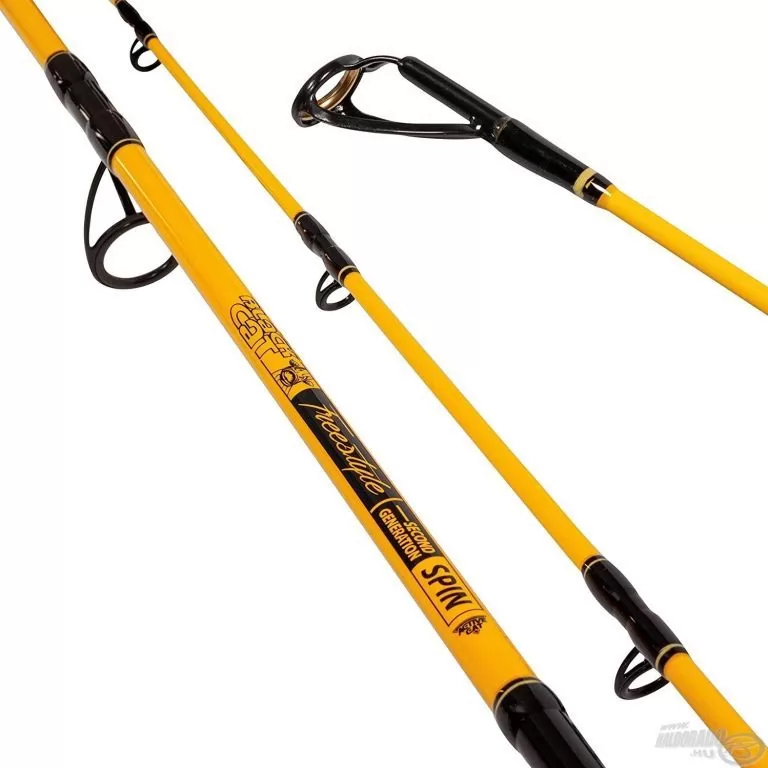

A pergetés során a horgász műcsalival dobál és tekeri vissza azt, így imitálva a mozgó zsákmányt. Ezzel a módszerrel ragadozóhalakat, pl. csukát, süllőt foghatunk.
Ehhez erős pergető bot és műcsali szükséges. Nagy mozgástér kell, így legjobb csónakból vagy part menti helyekről.
Bővebben: epeca.hu